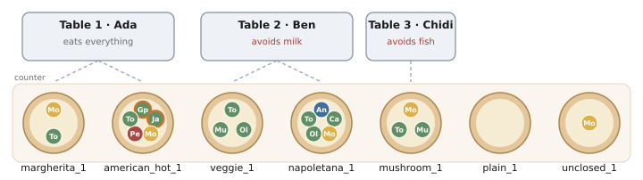
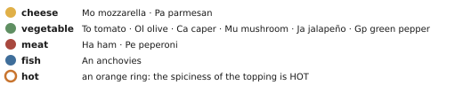
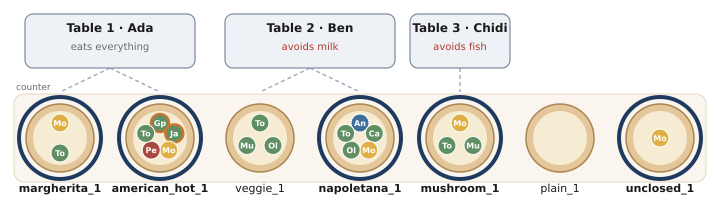
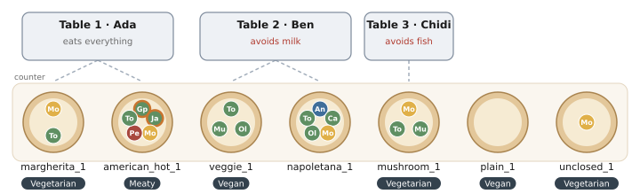
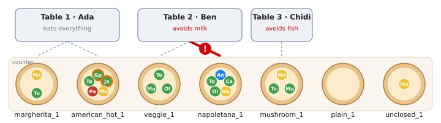
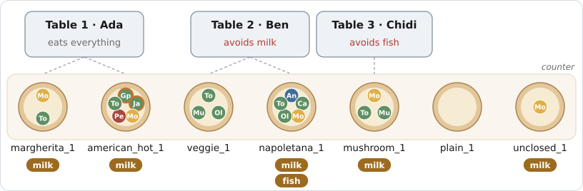
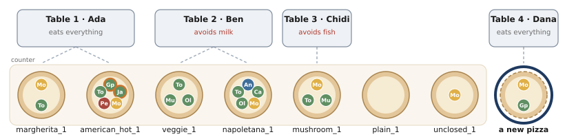
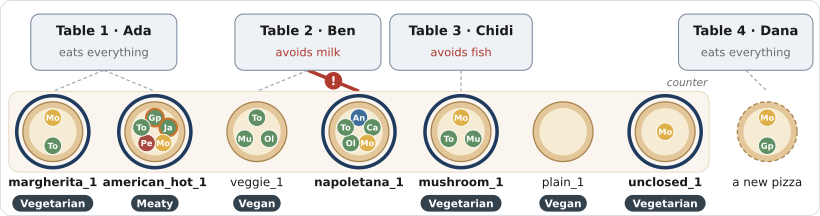

Asking, Defining, Constraining, Deriving, Generating
Tutorial: Thursday, 12.11.2026, 8:30–10:00, room 0.30, ECO 5
Last week you represented the pizza world in first-order logic and in Python. Tonight a service robot in a pizzeria uses that knowledge. Everything it does starts with one kind of expression, a description, written in the Entity Query Language (EQL). The five acts of the evening are five things the robot does with one:
Work in pairs with one laptop. Open the notebook 03-pizza_queries.ipynb (link on Stud.IP) and run its setup cell first. Every task says where it is done:
TODO you cannot
solve never stops you.| Time | Part | Students | Tutor, and the sentence that leads on |
|---|---|---|---|
| 0–8 | Slides | open the notebook and start its setup cell, then listen | slides 1–8. “Let us look at the world the robot knows.” |
| 8–12 | Prologue | warm-up on paper, in pairs | collect domain and extensions (2 min). “The chef has a first question.” |
| 12–36 | Act 1 Asking | 1(a) on paper; 1(b) predict and run; the vegetarian query; 1(c); 1(d) predict; 1(e) | stop after 1(b) for vacuous truth and the closed world (3 min); at 1(d) ask: what should the robot do with 0, and with 2? “You asked which pizzas are vegetarian. What does the word mean?” |
| 36–54 | Act 2 Defining | 2(a) on paper; 2(b) on paper, predict and run; the think question; 2(c) predict | after 2(a): no declaration can make an object a pizza. Draw ↔ on the board, ← classify, → conclude. “Some descriptions must never fit anything.” |
| 54–66 | Act 3 Constraining | 3(a) table, allergens, IsSafeFor; 3(b) on paper, then dangerous | draw ¬∀ ≡ ∃¬ on the board; one pair shows its red line. “The labels were facts about pizzas. Now the kitchen writes new things.” |
| 66–78 | Act 4 Deriving | 4(a); 4(b) predict and run | 4(b) is the climax: three pairs answer one source each. “So far, every new object was forced. Dana orders one she chooses.” |
| 78–85 | Act 5 Generating | 5(a) predict and run; 5(b) on paper | collect 5(b) on the board: several answers are right. “Let us put the evening together.” |
| 85–90 | Epilogue | 5(c) summary table | show Figure 14; the take-home message. |
Skip the think question of Act 3 and assign 5(b) for home. Pairs that are fast continue with the think
questions; nobody waits. Every notebook cell runs as it is, so a pair that is stuck on a TODO goes on
and compares with the solution later.
A small pizzeria in Bremen. A service robot works between the counter and the tables. Seven pizzas are on the counter, three tables have ordered, and two guests must not eat certain things. The robot knows all of this as objects: the classes of pizza.owl from last week, plus guests and orders.


The domain is the set of all objects: 7 pizzas, their 19 toppings, 3 guests and 3 orders (the spiciness values and allergens are named by constants). The extension of CheeseTopping is the set of the 5 yellow dots, one mozzarella on each cheesy pizza; that of hasTopping is the set of pairs (pizza, dot on that pizza), 19 pairs. Every query today is evaluated in this one interpretation.
EQL is part of the library KRROOD. Its queries are first-order formulas written over Python objects. The central expression is a description: a class and a pattern of attributes.
| EQL | Read it as | First-order logic |
|---|---|---|
a(Pizza) | some object of class Pizza | a variable x with Pizza(x) |
a(Pizza)(toppings=a(CheeseTopping)()) | a pizza with a cheese topping | Pizza(x) ∧ ∃t (hasTopping(x, t) ∧ CheeseTopping(t)) |
a(Pizza)(toppings=[A, B]) | whose topping list is [A, B] | the whole list: exactly these, in this order |
a(PizzaTopping)(spiciness=Spiciness.HOT) | a topping that is hot | spiciness(t) = hot |
a(Pizza) without .from_ | … among every pizza the robot knows | the range of x is the registry |
.from_(pizzas) | … among these objects only | the range of x |
the(Pizza)(…) | the pizza that … | exactly one object fits |
topping = flat_variable(pizza.toppings) | a topping of that pizza | a variable t with hasTopping(x, t) |
HasType(topping, VegetableTopping) | it is a vegetable topping | VegetableTopping(t) |
exists(t, φ), for_all(t, φ) | some, every topping … | ∃t φ, ∀t φ, over the toppings of x |
not_(φ), or_(φ, ψ), .where(φ, ψ) | not, or, and | ¬φ, φ ∨ ψ, φ ∧ ψ |
set_of(order.guest, pizza) | return these together | the free variables of the formula |
.tolist() | evaluate now | all assignments that satisfy it |
The chef calls across the kitchen. The cheesy pizzas go back into the oven for a minute, so that the cheese melts. The robot has to find them.
Pizza(x) ∧ ∃t (hasTopping(x, t) ∧ CheeseTopping(t)). The free variable is what is asked for, the bound variable t is a witness. Answers: margherita_1, napoletana_1, american_hot_1, mushroom_1, unclosed_1 (Figure 3). A pattern given for the list toppings describes one element: it is the ∃.
The query computes the set of objects that satisfy the formula in one interpretation: it checks a model. It does not ask whether the formula follows from a theory, that is, whether it is true in every model.

A pattern can only say some topping is …. For every and no, the topping gets a name and is quantified in .where(…). Each query introduces its own variables pizza = a(Pizza).from_(pizzas) and topping = flat_variable(pizza.toppings):
Q1 = pizza.where(for_all(topping, HasType(topping, VegetableTopping))) Q2 = a(Pizza)(toppings=[a(MozzarellaTopping)(), a(TomatoTopping)()]).from_(pizzas) Q3 = pizza.where(not_(exists(topping, HasType(topping, CheeseTopping))))
| margherita | napoletana | american hot | mushroom | veggie | plain | unclosed | |
|---|---|---|---|---|---|---|---|
| Q1 | |||||||
| Q2 | |||||||
| Q3 |
| marg. | napol. | am. hot | mush. | veggie | plain | uncl. | formula | |
|---|---|---|---|---|---|---|---|---|
| Q1 | × | × | Pizza(x) ∧ ∀t (hasTopping(x, t) → VegetableTopping(t)) | |||||
| Q2 | × | Pizza(x) ∧ ∃t₁∃t₂ (toppings(x) = [t₁, t₂] ∧ Mozzarella(t₁) ∧ Tomato(t₂)) | ||||||
| Q3 | × | × | Pizza(x) ∧ ¬∃t (hasTopping(x, t) ∧ CheeseTopping(t)) |
Last week the OWL reasoner refused to classify UnclosedPizza (a pizza with some mozzarella) as vegetarian. In the notebook, write the query vegetarian (no meat and no fish topping). Is unclosed_1 an answer? Who is right, the query or the reasoner?
vegetarian = pizza.where(not_(exists(topping, or_(HasType(topping, MeatTopping), HasType(topping, FishTopping)))))
Answers: margherita_1, mushroom_1, veggie_1, plain_1, unclosed_1; in logic ¬∃t (hasTopping(x, t) ∧ (MeatTopping(t) ∨ FishTopping(t))).
Both are right; they answer different questions. The query evaluates the formula in the one interpretation the robot has, where the list of toppings is complete (closed world). The reasoner asks whether “vegetarian” follows from what was said, i.e. holds in every model of it; there are models in which the pizza also has ham (open world). A robot looking at a pizza usually wants the closed-world answer, provided its knowledge of the pizza is complete.
Ada at table 1 does not like spicy food: “Is anything hot on my table?”
Patterns nest as deep as the objects do: an order has pizzas, a pizza has toppings, a topping has a spiciness.
Order(o) ∧ ∃x (hasPizza(o, x) ∧ ∃t (hasTopping(x, t) ∧ spiciness(t) = hot))
hot_pizzas = a(Pizza)(toppings=a(PizzaTopping)(spiciness=Spiciness.HOT)) hot_orders = an(Order)(pizzas=hot_pizzas)
Answers: american_hot_1, and the order of table 1. The set_of query has two answers, one per path of Figure 5. An answer is an assignment of values to the free variables that makes the formula true. In hot_orders, x and t are bound by ∃: only o is free, and the order is returned once, however many witnesses there are.
Ben at table 2 waves: “Bring me the pizza with olives.”
A command does not name an object; it describes one. the(…) is still a question, with one more demand: on the number of answers.
| Command | Pizzas that fit | What the robot does |
|---|---|---|
| “the pizza with ham” | ||
| “the pizza with fish” | ||
| “the pizza with olives” |
| Command | Pizzas that fit | What the robot does |
|---|---|---|
| “the pizza with ham” | none | reports that there is no such pizza (NoSolutionFound) |
| “the pizza with fish” | napoletana_1 | brings it |
| “the pizza with olives” | napoletana_1, veggie_1 | asks back (MultipleSolutionFound) |
Russell analysed “the F is G” as ∃x (F(x) ∧ ∀y (F(y) → y = x) ∧ G(x)): there is exactly one F, and it is G. If there is no F or more than one, Russell calls the sentence false; Strawson argued that it is neither true nor false, because its presupposition fails. The robot, which refuses instead of answering, takes Strawson's side: picking one pizza at random would be a guess, not obedience.
The robot asks back: “The one with fish, or the one without?” Ben: “Without fish.”
Pizza(x) ∧ ∃t (hasTopping(x, t) ∧ OliveTopping(t)) ∧ ¬∃t′ (hasTopping(x, t′) ∧ FishTopping(t′)); tonight only veggie_1 satisfies it.
pizza = the(Pizza)(toppings=a(OliveTopping)()).from_(pizzas) topping = flat_variable(pizza.toppings) olives_without_fish = pizza.where(not_(exists(topping, HasType(topping, FishTopping))))
Two quantifiers, two variables: the pattern names the olive, topping ranges over all toppings. A good question back names a property that one candidate has and the other has not.
Whether a description refers also depends on the domain: “the pizza with cheese” does not refer tonight, but “the pizza with cheese of table 3” does (mushroom_1). People narrow the domain by context until “the” works; a robot adds that context to the description, for example .from_(order_of_table_3.pizzas).
The chef prints tomorrow's menu, where a green V marks a vegetarian pizza, and a supplier has just delivered two frozen pizzas. In Act 1 you asked which pizzas are vegetarian. Now the word gets a meaning of its own.
A definition gives a description a name. The name is then used in three ways: to check one candidate, to classify every object, and to conclude from the name alone.
A Python object keeps the class it was created with: veggie_1 cannot become a vegetarian pizza. A label that an existing object takes on is a role, an object of its own that stands for the pizza and reads every attribute through to it:
class MenuLabel(Role[Pizza]): ... # a menu label is a role of a pizza class VegetarianPizza(MenuLabel): ... class VeganPizza(VegetarianPizza): ...
KRROOD reads the class declarations as statements about every object of a class. Cell 2(a) prints what it reads:
| Read from the declarations | First-order formula |
|---|---|
| every MozzarellaTopping is a CheeseTopping | |
| every Pizza has toppings, each a PizzaTopping | |
| every Order has a guest, which is a Guest | |
| every MenuLabel is a role of one Pizza |
| Read from the declarations | First-order formula |
|---|---|
| every MozzarellaTopping is a CheeseTopping | ∀x (MozzarellaTopping(x) → CheeseTopping(x)) |
| every Pizza has toppings, each a PizzaTopping | ∀x ∀t (Pizza(x) ∧ hasTopping(x, t) → PizzaTopping(t)) |
| every Order has a guest, which is a Guest | ∀o (Order(o) → Guest(guest(o))); guest is a function |
| every MenuLabel is a role of one Pizza | ∀l (MenuLabel(l) → Pizza(roleTaker(l))) |
All four are necessary conditions: they say what follows from being a C, never when something is a C. None of them can make an object a pizza. In Python the class is asserted when an object is created, and HasType is isinstance: it reads the asserted class and never infers one. These are the subclass and range axioms of pizza.owl from last week. Python does not check type hints when the program runs; KRROOD and EQL read them.
The menu's rule: a pizza is vegetarian if and only if it has no meat topping and no fish topping.
∀x (VegetarianPizza(x) ↔ Pizza(x) ∧ ¬∃t (hasTopping(x, t) ∧ (MeatTopping(t) ∨ FishTopping(t)))). Right to left (←) is sufficient: whatever satisfies the condition is vegetarian. Left to right (→) is necessary.
frozen_1 is rejected (ham), frozen_2 accepted. Checking a candidate is the formula with its variable bound, φ(a): a question whose answer is yes or no. Classifying applies the ← direction as a rule to every pizza, ∀x (φ(x) → VegetarianPizza(x)): margherita_1, mushroom_1, veggie_1, plain_1 and unclosed_1 get the role. The role is a Python object of its own, but it stands for the same pizza: the rule adds a fact about something that exists, not a new thing in the kitchen.
The registry also answers frozen_2: creating the frozen pizzas to check them entered them in the registry, but they are not on tonight's menu. The registry is everything the robot has created; .from_(…) is the domain the question is about. A check names its domain as .from_([candidate]).
A pizza from the other branch arrives with a green V; nobody wrote down its toppings. What may the robot tell Chidi, who avoids fish? And Ben, who avoids milk?
Chidi: it is safe, by the necessary direction: VegetarianPizza(x) → ¬∃t (hasTopping(x, t) ∧ FishTopping(t)) follows from the name alone. Ben: nothing, because the definition says nothing about cheese. No query of Act 1 could answer this, since the toppings are unknown. A definition works in both directions: ← to classify, → to conclude from the class.
The menu gets more labels. The chef's rule of thumb is a rule tree (Figure 7). The declaration class VeganPizza(VegetarianPizza) of (a) already says that every vegan pizza is vegetarian.
| margherita | napoletana | american hot | mushroom | veggie | plain | unclosed |
|---|---|---|---|---|---|---|
| margherita | napoletana | american hot | mushroom | veggie | plain | unclosed |
|---|---|---|---|---|---|---|
| Vegetarian | none | Meaty | Vegetarian | Vegan | Vegan | Vegetarian |
napoletana_1 has fish, so the first condition fails; it has no meat, so the alternative fails as well. The rules are silent, and silence is not “no”: they never concluded “not vegetarian”; reading it so would be one more closed-world step. The unless branch is an exception: a more specific conclusion replaces the general one. Rule trees of this shape are known as ripple-down rules.

Ben avoids milk. Nowhere does it say “napoletana_1 contains milk”: it has to be computed. Mozzarella is a cheese, cheese contains milk, and the pizza has that topping.
symbolic_function turns a Python function into a symbol of the query language, and a Predicate is a relation decided by a computation.
| hasTopping(x, t) | guest(o) = g | ∀t (Mozzarella(t) → Cheese(t)) | milk ∈ allergens(x) | IsSafeFor(x, g) |
|---|---|---|---|---|
| hasTopping(x, t) | guest(o) = g | ∀t (Mozzarella(t) → Cheese(t)) | milk ∈ allergens(x) | IsSafeFor(x, g) |
|---|---|---|---|---|
S: the list toppings | S: the field guest | S: the class hierarchy | C: allergens | C: the predicate |
@symbolic_function
def allergens(pizza):
found = {Allergen.GLUTEN}
if any(isinstance(t, CheeseTopping) for t in pizza.toppings): found.add(Allergen.MILK)
if any(isinstance(t, FishTopping) for t in pizza.toppings): found.add(Allergen.FISH)
return found
class IsSafeFor(Predicate):
def __call__(self): return not (allergens(self.pizza) & self.guest.avoids)
pizza = a(Pizza).from_(pizzas)
safe_for_ben = pizza.where(IsSafeFor(pizza, ben)) # veggie_1, plain_1
In a query, stored and computed relations look the same. Giving a symbol a program as its meaning is called procedural attachment.
The kitchen's rule: every pizza of an order is safe for the guest of that order.
Constraint: ∀o ∀x (hasPizza(o, x) → IsSafeFor(x, guest(o))).
Negation: ∃o ∃x (hasPizza(o, x) ∧ ¬IsSafeFor(x, guest(o))). As a query, o and
x are left free, so that each answer names a culprit:
order = an(Order).from_(orders) pizza = flat_variable(order.pizzas) dangerous = set_of(order, pizza).where(not_(IsSafeFor(pizza, order.guest)))
One violation: table 2, Ben, napoletana_1 (mozzarella, hence milk). EQL could evaluate the ∀ directly, but the answer would only be “false”; the counterexample query says which plate not to serve.

Suppose the kitchen's rule were an axiom of last week's ontology. What would the reasoner report for tonight's facts? And if the mozzarella of the Napoletana had simply not been recorded?
An axiom does not check facts; it restricts the models. Facts that contradict it leave no model at all: the ontology is inconsistent, and from an inconsistent theory every formula follows. The reasoner reports the inconsistency, not a plate. If the mozzarella had not been recorded, there would be no contradiction: in the open world, the reasoner would rather conclude that the Napoletana is safe for Ben, because the axiom demands it. Used as an integrity constraint, the same formula is checked against the one interpretation; the knowledge base stays usable, and the answer is the culprit.
The menu must list the allergens of every pizza. Instead of computing them for every question, the kitchen writes them down once: a slip of paper on each pizza.
The labels of Act 2 were facts about pizzas that exist. A warning is different: it is a new object.
inference(AllergenWarning)(pizza=D, allergen=Allergen.MILK) creates one new warning object for every pizza that fits the description D. With D the description of Act 1(a), it is the rule
∀x (Pizza(x) ∧ ∃t (hasTopping(x, t) ∧ CheeseTopping(t)) → ∃w (Warning(w) ∧ about(w, x) ∧ allergen(w) = milk))
The left side of → is the body of the rule: exactly the description of 1(a). The right side is the head: for every answer of the body, a new object w is created as the witness of ∃w.
fishy = a(Pizza)(toppings=a(FishTopping)()).from_(pizzas) fish_warnings = inference(AllergenWarning)(pizza=fishy, allergen=Allergen.FISH).tolist() gluten_warnings = inference(AllergenWarning)(pizza=a(Pizza).from_(pizzas), allergen=Allergen.GLUTEN).tolist()
13 warnings: 5 milk, 1 fish, 7 gluten. Deriving all conclusions in advance is forward chaining (materialisation). The predicate of Act 3 works the other way: it derives its conclusion only when a question needs it, which is the strategy of backward chaining.
Compare the label rule of Act 2, ∀x (φ(x) → VegetarianPizza(x)): its head has no ∃, so it only adds facts about the objects there are. Rules of that kind never create objects; rules with ∃ in the head do, one witness for every answer of the body.

It is busy. The cook mixes up two tickets and grates parmesan over veggie_1, Ben's pizza.
| 1. the constraint of Act 3, checked now | 2. the milk warnings derived in (a) | 3. the label of veggie_1 (Act 2), derived again |
|---|---|---|
| 1. the constraint of Act 3, checked now | 2. the milk warnings derived in (a) | 3. the label of veggie_1 (Act 2), derived again |
|---|---|---|
| two violations: napoletana_1 and veggie_1 | no warning for veggie_1 | Vegetarian (it was Vegan) |
Dana sits down at table 4 and orders. Her order is a description, exactly like those of Act 1. What is new is who answers it.
A query in EQL is a symbolic object; nothing is computed when it is written. A backend is whatever answers it, and the same description can be handed to different backends:
In Act 1, every answer was an object of the interpretation in Figure 2. What is an answer here? What does it mean, in terms of models, that Dana's open description has several answers?
The counter (a selecting backend) answers margherita_1; the kitchen (a generative backend) answers a new pizza with exactly these toppings. The open description has three answers, one per value of Spiciness.
An answer is now a new object that, added to the interpretation, makes the description true: answering means constructing a model instead of checking one. An underspecified description can be made true in several ways; the generator enumerates them, a probabilistic backend would rank them by how likely they are.
Asked again, the hot pizzas of 1(c) and the vegetarian question put to the registry in 2(b) also find the kitchen's offers, pizzas nobody ordered. Every question with .from_(pizzas) or .from_(orders) keeps its answer. Ask the registry when the question is about everything the robot knows; give a domain when it is about a particular set: tonight's counter, one candidate.

The robot's next task is a plan with open slots, each written as a description:
| ① safe pizza | ② its pose | ③ Ben's table | ④ grasp | ⑤ have one made |
|---|---|---|---|---|
| ① safe pizza | ② its pose | ③ Ben's table | ④ grasp | ⑤ have one made |
|---|---|---|---|---|
| R and K: IsSafeFor over the pizzas | L: the knowledge base knows that it is there, not exactly where | K: the orders | S: sampled, then tried | G: Act 5(a) |
Several answers are defensible; what matters is that the plan does not say who answers. It states what it needs, symbolically, and each slot goes to the backend that can answer that kind of description. The robots of our current research work this way: in a sorting task, the piece to pick up is looked for by perception, where it stands is read off the robot's digital twin, the hole it fits through is concluded by rules, and how to grasp it is sampled: one plan, four backends.

| Use | The question behind it | Tonight's example | In logic |
|---|---|---|---|
| 1 Ask | Which objects fit? | ||
| 2 Define | What is a C? | ||
| 3 Constrain | Does anything violate it? | ||
| 4 Derive | What new object does each fit get? | ||
| 5 Generate | What could fit? |
| Use | The question behind it | Tonight's example | In logic |
|---|---|---|---|
| 1 Ask | Which objects fit? | the cheesy pizzas; who gets which hot topping; the pizza with olives and without fish | the assignments to the free variables that satisfy a formula in one interpretation; the: exactly one |
| 2 Define | What is a C? | the green V: frozen_2 accepted, five pizzas classified; the menu labels | C(x) ↔ φ(x): ← classifies (a rule without ∃ in its head), → concludes from the class; class declarations give necessary conditions only |
| 3 Constrain | Does anything violate it? | no pizza unsafe for its guest | a ∀ checked through its counterexamples ∃¬; an integrity constraint, not an axiom |
| 4 Derive | What new object does each fit get? | the allergen warnings | a rule with ∃ in its head: one new witness per answer of the body, by forward chaining |
| 5 Generate | What could fit? | Dana's pizza; the slots of the plan | constructing new objects that make the description true, chosen among many |
Two questions tell the uses apart. Does the use read the knowledge base (1, 3) or write to it (2, 4, 5)? And must the answer fit the world, as for a question, or must the world fit the formula, as for a constraint and a specification? Deriving and generating both create objects: a rule's objects are forced, one per answer of its body; a generator chooses one of many that fit, so it has to search.
The non-monotonic rule tree belongs to defining: its conclusions are labels of existing pizzas, and an added fact (the parmesan of 4(b)) withdrew one of them.
One expression, a description, carried the whole evening. Its meaning is a formula with free variables; what you do with it decides whether it is a question, a definition, a constraint, the body of a rule or a specification, and which backend answers it decides whether it is checked, computed or constructed.
To think about at home: a robot tidies a kitchen. Give one description for each of the five uses, and the backend that should answer it.